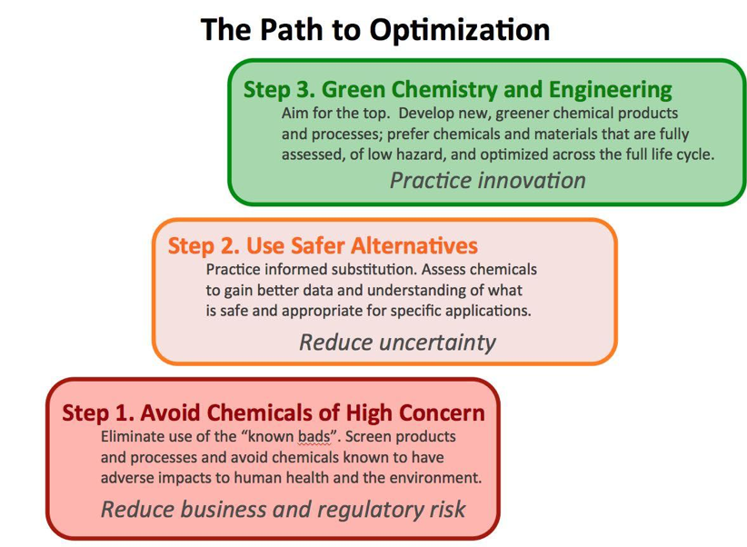
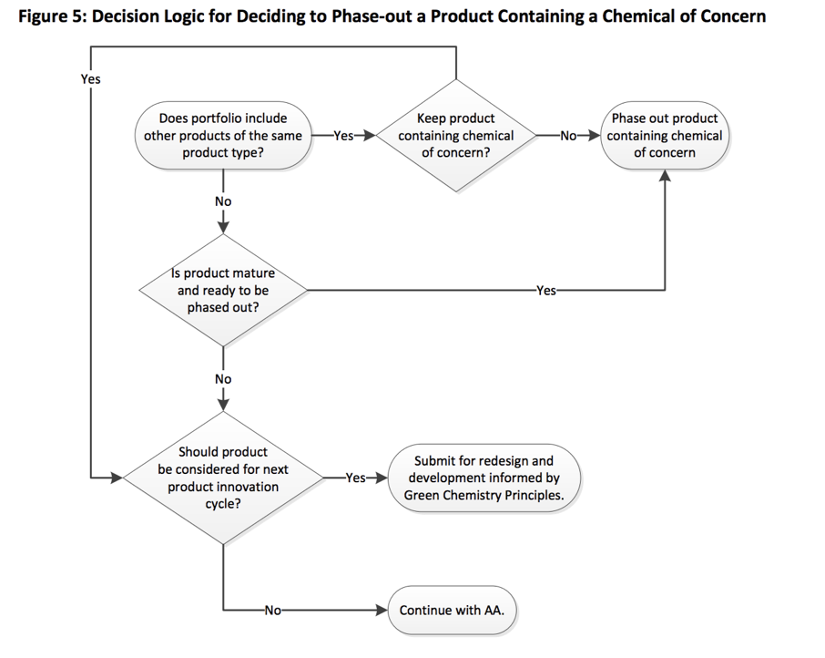

Contents
Step 7 Evaluation and Optimization¶
Goal¶
To encourage transparency, to identify opportunities for improvement and data gaps that need to be researched, to avoid unacceptable tradeoffs and to ensure consideration of all of the PASS principles.
Introduction¶
In the introduction at the start of PrISM, we discussed the importance of taking a holistic approach to product design and using PASS Principles to guide holistic design. Product design as a creative endeavor requires tradeoffs. While tradeoffs are inevitable and challenging, there are different ways to manage them.
Wherever there are tradeoffs, transparency can support credibility and ensure that decisions are clear and understandable. Tools that are ‘black boxes’ or that provide results without transparency are not recommended because it will not be clear if the assessment aligns with the stated goals and objectives of the product designer.
Based on the initial problem formulation step, the designer may have established sustainable product design goals. Those goals should be revisited to help the designer identify which aspects are most important. Based on new information and perspectives, the product design goals may be modified in an iterative way.
PrISM can help give you insight into all aspects of your product’s life cycle. Critically, it can also help you identify what you don’t know about your product. Honing in on missing pieces of the puzzle will highlight areas that need additional or deeper evaluation, opportunities for innovation and improvement or where your product really shines.

Optimization is a process of continual improvement. Sometimes the first step is to simply eliminate chemicals or materials of high concern. That can have immediate benefits and it can get the product on the path to Sustainable Green Chemistry and Engineering design.
Data gaps in hazard information are also likely. A tiered approach to hazard screening that begins with hazard list screening and moves to intermediate and then more comprehensive approaches to chemical hazard assessment is appropriate. See Resource 2 - Chemical Hazard Assessment for guidance and suggestions. Using life cycle thinking to narrow the focus of the assessment to those elements that discriminate between options helps to limit data needs. See Resource 6 - Life Cycle Assessment for guidance and suggestions.
Substituting safer chemicals for chemicals of concern in products is a good step. But it is not the end of the road. True innovation happens when designers strive to optimize all of the PASS Principles: * Supports a circular economy * Creates life-friendly chemistry * Restores natural capital * Supports a just and inclusive society Innovative solutions may be found that are not incremental but that are truly disruptive to the marketplace as exemplified in Step 6 - Whole Product Assessment.
Data Gaps¶
Filling data gaps can be time- and resource-intensive. All considerations identified in this report are subject to data challenges and subsequent uncertainty. For example, it may not be possible to identify every reagent, auxiliary, additive, and every degradation product formed in a product life cycle. Therefore focusing on those life cycle stages likely to result in the greatest exposure to hazardous chemicals should be prioritized.
Data gaps in hazard information are also likely. A tiered approach to hazard screening that begins with hazard list screening and moves to intermediate and then more comprehensive approaches to chemical hazard assessment is appropriate. Using life cycle thinking to narrow the focus of the assessment to those elements that discriminate between options helps to limit data needs.
Criteria Weighting¶
In an ideal universe, an alternative would be optimal for all categories, i.e. low hazard, uses sustainable feedstock, clean production and manufacturing processes, many material reuse cycles, etc. However, this is rarely the case and trade-offs have to be made. Tradeoffs arise both between and within categories. For example, within hazard assessment, additives may not be Substances of Very High Concern (SVHCs) but they may be moderately hazardous to humans or the environment in different ways.
Fortunately, CHA methods are becoming increasingly standardized to allow for transparent tradeoffs between different hazards within a hazard profile.
Tradeoffs also occur between different impact categories. For example, one option may use more water while another may generate more waste during use. These tradeoffs must be judged against product design goals and using all three Design Principles for Sustainable Green Chemistry and Engineering (below). What is important is that the designer avoids potential perverse outcomes by focusing on only one principle. And that the decisions are made in an informed and transparent way so as to avoid unintended consequences.
PASS Principles¶
Trade Offs¶
Set baseline requirements¶
While tradeoffs may be necessary, baseline limits can be set so that gains in one category do not result in unacceptable losses in another. For example, while effective recyclability and available recycling infrastructure are desirable; they are not viable tradeoffs for plastics that violate a design objective to avoid substances of very high concern. Lesser levels of chemical hazard may be acceptable assuming that exposure to those chemicals does not result in unacceptable levels of risk to workers, users or the environment. Identify those trade offs that are ‘show stoppers’.
Apply Decision Analysis¶
In decision analysis, you will use logic models to evaluate information in way that increases clarity around which options are preferred or less preferred. There are a variety of existing frameworks. You can consider options one at a time in a sequential way or, alternatively, you can consider all the the options simultaneously using a mathematical algorithm. Yet another approach is to use some hybrid of these two frameworks.
Next Steps¶
Completing this step will help you identify action items for improving your product or processes. Your next step may involve doing research or testing to fill in data gaps, or you may have already identified a hot spot that needs to be addressed. As you complete these action items, return to PrISM to re-assess your progress and next steps. PrISM is designed to be used iteratively to improve product design.
Example¶
Sometimes it makes sense to phase out a problematic product and to start over. Other times it makes sense to improve its next incarnation informed by PASS Principles.

Image source: Page 18 (page 28 pdf) of the IC2 Alternatives Assessment Guide
Learn more about decision analysis in Resource 7 - Decision Analysis
Reviewing your answers¶
We recommend generating a pdf report and having it open in another window, or printing it out for easy viewing, while answering these questions. You will be reviewing your previous answers and working to identify data gaps, hot spots, and your next steps for product optimization.
You can generate a pdf report by clicking on the “save and close” button at the bottom of this page, or the “close and return to PrISM” button at the top of this page. Then, on the main dashboard, click on the “generate report PDF” button. You will be prompted to designate a file name and save location. You can then open the pdf in your standard pdf viewer, and either keep the window open side-by-side or print it.